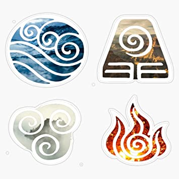

(ATLA)
"Life happens wherever you are, whether you make it or not." -Iroh
| Element | Civilization Style | Key Character |
|---|---|---|
| Water | Tribe | Katara |
| Earth | Kingdom | Toph |
| Fire | Nation | Zuko |
| Air | Nomads | Aang |
Sokka was originally designed to be a more serious character throughout the series, until voice actor Jack DeSena added his own spin onto the character.
Momo is rumored to be a reincarnation of Monk Gyatso - Aang's former mentor from a hundred years ago.